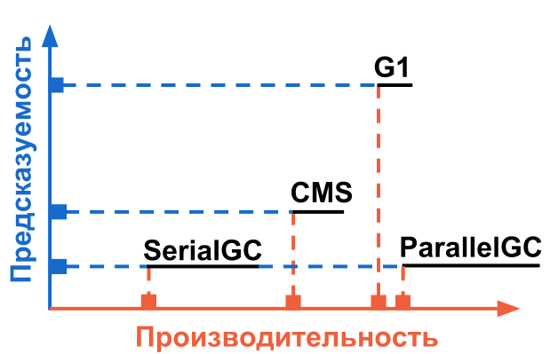

Your browser doesn't support the features required by impress.js, so you are presented with a simplified
version of this presentation.
For the best experience please use the latest Chrome, Safari or Firefox browser.
Garbage Collector
и управление памятью
в HotSpot JVM
GC, мониторинг
GC logs:
Просмотр всей статистики по работе GC
Безопасно для production
Есть возможность визуализации
VisualVM
Мониторинг в реальном времени
В комплекте с JDK начиная с 6-й версии
GC, логирование
Запуск логирования:
-XX:+PrintGC или -verbose:gc
Запись в файл "monitor-gc.log":
-Xloggc:monitor-gc.log
Дополнительные параметры:
-XX:+PrintGCDetails
-XX:+PrintTenuringDistribution
GC, тюнинг
Общие советы:
Ничего не делать, довериться HotSpotJVM
Размер Heap не более чем доступная физическая память
Увеличение памяти всегда увеличивает производительность GC
Меняйте алгоритм сборки по наростающей(SerialGC, ParallelGC, CMS, G1)
Перестаньте писать кака-код
GC, тюнинг
Выбор стратегии:
Производительность, предсказуемость
Борьба с stop-the-world паузами
Производительность
Предпочтительный алгоритм ParallelGC

Производительность c ParallelGC
Уменьшение частоты сборок:
-XX:GCTimeRatio=n - отношение времени работы GC к времени работы приложения:
1 / (1 + n)
Использование Parallel Compacting на больших Heap:
-XX:+UseParallelOldGC
Изменение размеров YoungGen/Survivor таким образом, что бы объект как можно быстрее попал в OldGen(возраст 2 сборки)
Паузы и CMSGC
CMSGC наилучшим образом подходит для борьбы с паузами.
FullGC - источник длительных пауз при CMS
Основная причина : Сильная фрагментация OldGen
Паузы и CMSGC
Как избежать FullGC:
Вызов по расписанию System.gc() во время минимальных нагрузок
Объект должен как можно дольше находиться в YoungGen
Размер OldGen подобрать без излишков(20% запаса)